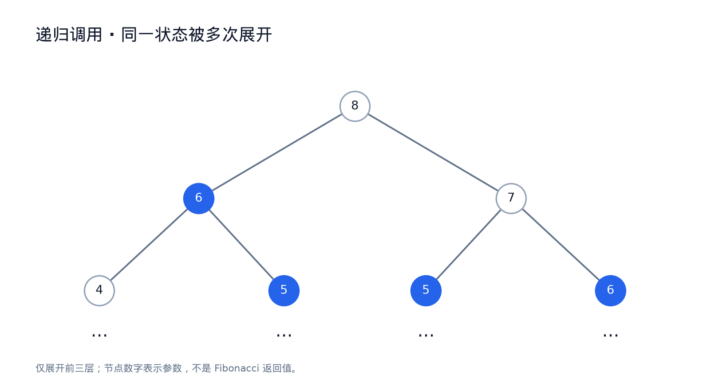
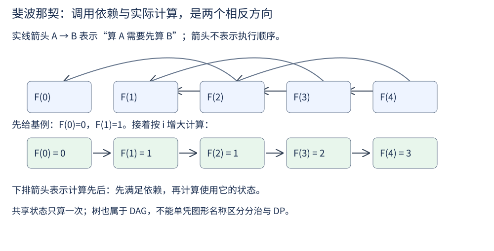

第 20 讲 · 动态规划入门¶
阅读起点：第 7 讲：递归；第 14 讲：返回值；读懂列表即可开始。
首读范围：先算 fib 的重复调用，再做楼梯与打家劫舍；解码方法用于巩固最后一步分类，股票状态选读。
先做一个明确的小任务：斐波那契数列规定 F(0)=0、F(1)=1，从第 2 项起每一项等于前两项之和，因此开头是 0,1,1,2,3,5,8,…。输入非负整数 n，返回 F(n)，例如 n=5 时返回 5。
这一定义可以直接翻译成递归。求 F(5) 先求 F(4)、F(3)，再把结果相加；遇到 0、1 就直接返回：
然后问：它正确吗？运行时间是多少？怎么改进？
第一问是"正确"，第二问的答案却让人吃惊——它是指数级的。
重复子问题¶
这里求 F(3) 就是一个小问题，无论哪次调用需要它，答案始终是 2。我们用参数 3 标识这个小问题，称它为一个状态。不同调用若请求的是同一状态，就有机会复用之前算好的答案，而不重新展开一遍。
画一下 fib(5) 的调用树：
先不解递归式，也能看出指数增长。只看前 ⌊n/2⌋ 层：深度 d<⌊n/2⌋ 时，即使每步都减 2，参数仍至少为 2，因此这一层每个调用都会分成两个。到了深度 ⌊n/2⌋，已经有 2^⌊n/2⌋ 个调用（这一层可以含基例）。另一方面，整棵树深度至多 n，调用数不超过 O(2^n)。这已说明调用量按指数增长。
fib(3) 出现了两次、fib(2) 出现了三次。每次调用自身只做常数项工作，但整个 fib(3) 并不是常数时间。递归式是 T(n) = T(n−1) + T(n−2) + Θ(1)，解为 Θ(φⁿ)（φ ≈ 1.618）。同样的子问题被反复展开，增加的是调用总数。这里按每次数值加法为单位计数；大整数位成本另见第 26 讲。
这一讲要解决的正是这类问题：识别"重复子问题"，用"记住答案"或"自底向上递推"把它变成多项式时间。

圆内的 8、6、7 等是 fib 的参数，不是返回值。相同数字出现在多个圆内，就表示同一状态被重复求解。左右孩子画成 fib(n−2)、fib(n−1)，与上方代码的调用先后相反，但重复计算的结构相同。
把递归画成依赖图¶

依赖图把每个待求的小问题画成一个点，再用箭头表示需要先算谁。斐波那契的参数沿依赖严格减小，因此不可能沿箭头绕回原处，这种没有有向环的图叫 DAG。把同一个状态的重复调用合并为一个顶点，才能看清工作为何可复用。例如 F(3) 在调用树里出现多次，合并后只计算一次。
先约定箭头 A→B 表示“计算 A 要先有 B”。那 F(5) 指向 F(4)、F(3)，但实际计算应先 F(0)、F(1)，再往上算，顺序与这种箭头的拓扑序相反。也可把箭头画成“已知 B 推出 A”，此时才按拓扑序算。两种约定都可以，但文字与图必须一致。
树本来也是 DAG，不能仅凭“树还是 DAG”给算法分类。这里真正重要的是：能否定义足够小的状态集合、是否有重复状态、依赖是否能按顺序求解，以及每个状态算一次的成本。普通递归可以重复求同一状态；记忆化把答案保存后复用。
还有一套很好用的"检查清单"（SRT BOT，六个字母各代表一步），可以拿来核对思路是否完整：
1. Subproblems 子问题怎么定义
2. Relation 子问题之间的递推关系
3. Topo order 子问题的拓扑序（决定计算顺序）
4. Base cases 最小的那些子问题
5. Original 最终答案对应哪个子问题
6. Time 时间分析
用归并排序过一遍就是：子问题 S(i,j) = 把 A[i:j] 排好，关系是 merge(S(i,m), S(m,j))，依赖先算的顺序按区间长度递增，基例是长度 1，答案是 S(0,n)，时间 T(n) = 2T(n/2) + O(n)。这些互不重叠的区间子问题不会重复求解，因而通常称为分治；不是因为树不属于 DAG。
换成斐波那契：子问题 F(i)，关系 F(i) = F(i−1) + F(i−2)，依赖先算的顺序按 i 递增，答案是 F(n)。合并重复状态后的依赖图有共享节点，因为 F(i) 被多个父问题共享——这就是需要 DP 的信号。
三种保存状态的方法¶
先把“只算一次”直接写成数组，别急着压缩变量：
def fib_table(n):
if n <= 1:
return n
dp = [0] * (n + 1)
dp[1] = 1
for i in range(2, n + 1):
dp[i] = dp[i - 1] + dp[i - 2]
return dp[n]
n=5 时表依次填成 [0,1,1,2,3,5]。循环开始算 i 时，前面所有格子都已算好，因此可以直接读取 i−1、i−2。状态只有 n+1 个，每个做常数次工作，时间 O(n)，表空间 O(n)。下面给出另外两种保存相同状态的方法。以 @ 开头的这一行给紧接着的函数加上缓存功能：仍然像普通函数一样调用，但相同参数的结果只需计算一次；此处不需要自己实现缓存机制。
from functools import lru_cache
@lru_cache(maxsize=None) # 自顶向下：记忆化
def fib_memo(n):
if n <= 1:
return n
return fib_memo(n - 1) + fib_memo(n - 2)
def fib_iter(n): # 自底向上：递推 + 滚动变量
if n <= 1:
return n
prev2, prev1 = 0, 1
for _ in range(2, n + 1):
prev2, prev1 = prev1, prev1 + prev2
return prev1
记忆化从递归式直接翻译，由递归调用先算依赖；递推能顺手做空间压缩（F 只依赖前两项，所以只要两个变量）。@lru_cache(maxsize=None) 会按参数保存返回值，再次调用同一个 n 时直接取缓存。记忆化也有 O(n) 个状态，但还保留 O(n) 调用栈；滚动版只存前两项，额外空间 O(1)。
递推关系是从哪来的¶
DP 最难的一步是"写出转移方程"。有两条常用的路子。
对最后一步分类讨论¶
爬楼梯：每次可以爬 1 级或 2 级，求到第 n 级的走法数。
最后一步只有两种可能——从第 n−1 级爬 1 级上来，或从第 n−2 级爬 2 级上来。两种情况互不重叠（最后一步不同就是不同的走法），而且并集就是全部走法。所以
这个"分类恰好覆盖且互不重叠"的论证就是转移方程的正确性依据。还应逐项说明每个分支怎样对应原问题。
先把楼梯的基例落到代码：0级有一种“什么也不走”的空走法，1级只有一步1。2级是1+1与2，共2种；3级共3种。
def climb_stairs(n):
if n == 0:
return 1
dp = [0] * (n + 1)
dp[0] = dp[1] = 1
for i in range(2, n + 1):
dp[i] = dp[i - 1] + dp[i - 2]
return dp[n]
n+1个状态，每个除常数次读取和相加外无额外搜索，时间O(n)、表空间O(n)。记忆化的第一次请求仍沿n−1不断向下，缓存不自动消除递归深度；很大n时用循环避免Python递归深度限制。
同样按最后一步分类：解码方法¶
解码方法的输入是一串非空数字字符，编码规则为 1→A、2→B、…、26→Z。要求返回把整串拆成合法编码的方式数，例如 "12" 可拆成 1|2（AB）或 12（L），答案为 2；"06" 没有合法拆法。
定义 dp[i] 为前 i 个字符的解码方式数。最后一个编码只可能占一位或两位，所以仍按最后一步分类：最后一位单独解码，或最后两位一起解码。基例需要特别说明——dp[0] = 1（空串有 1 种解码方式），它让“两位一起解码”在i=2时正确计数。还必须检查单字符为1..9、双字符为10..26：0不能单独解码，06不能作为6处理。否则基例正确也会算错，例如字符串 "10" 应只有1种。
具体转移可以从 0 开始累加：第 i 个字符若不是 0，它能单独作为一个编码，加入 dp[i−1]；若 i≥2 且末两位在 10..26，它们还能合成一个编码，再加入 dp[i−2]。不合法的分支不计数，而不是无条件把前两项相加。
def num_decodings(s):
# 输入为非空数字字符串；只计算满足编码规则的拆法。
dp = [0] * (len(s) + 1)
dp[0] = 1
for i in range(1, len(s) + 1):
if s[i - 1] != '0':
dp[i] += dp[i - 1]
if i >= 2 and 10 <= int(s[i - 2:i]) <= 26:
dp[i] += dp[i - 2]
return dp[-1]
i=1 时第二个分支不会执行，也不会读取 dp[i−2]，所以不依赖不存在的更短前缀；第一格由首字符是否合法自然得到 1 或 0。调用结果为：num_decodings("12") 得 2，num_decodings("10") 得 1，num_decodings("06") 得 0。每格只检查一位或两位，时间 O(n)、表空间 O(n)。
每步做“选或不选”的决策¶
打家劫舍给定非负整数数组 nums，nums[i] 是第 i 间房子里的金额。可以选择若干房子，但任何相邻两间不能同时选，返回最多能得到的总金额；也可以一间不选。例如 [4,5,4] 选两端可得 8，比只选中间的 5 更好。
从前 i 间房的最优方案出发，第 i 间只有“选”和“不选”两种情况：
先保留数组，避免把状态和变量覆盖同时学：D[i]表示前i间房的最优金额，D[0]=0；输入金额非负，D[1]=nums[0]。第i间对应数组nums[i−1]，不偷则D[i−1]，偷则D[i−2]+nums[i−1]。
def rob_table(nums):
dp = [0] * (len(nums) + 1)
for i, value in enumerate(nums, 1):
skip = dp[i - 1]
take = value + (dp[i - 2] if i >= 2 else 0)
dp[i] = max(skip, take)
return dp[-1]
[4,5,4] 得到整张表 [0,4,5,8]。只读取前两项，所以可以再压成下面的prev2、prev1；每次赋值右边都用旧值。
def rob(nums):
prev2 = prev1 = 0 # dp[i-2], dp[i-1]
for x in nums:
prev2, prev1 = prev1, max(prev1, prev2 + x)
return prev1
滚动版按房子从0开始处理；prev1是此前已处理前缀的最优值，prev2是再少一间的最优值。开头两个0表示还没选房，不是读取Python列表的负下标。空数组返回0，单元素返回它。两版时间都O(n)，滚动版额外空间O(1)。
状态是有限的几种¶
题目给出每天的股价 prices，每天可以选择买入一股、卖出持有的一股或不操作；同一时刻最多持有一股，可以完成多次交易，但卖出后的第二天不能买入。目标是结束时不持股，得到最大总利润。例如 [1,2,3,0,2] 可在价格 1 买、2 卖，休息一天，再在 0 买、2 卖，总利润为 3。
只记录“目前赚了多少”不够，因为同样的收益下，是否持股、今天是否刚卖出，会影响明天能做什么。因此把每天结束时分成三个状态：
在一天结束时，hold 是持有一股的最大收益，sold 是当天刚卖出的收益，rest 是不持股且当天没有卖出的最大收益。只能由昨天 rest 买入，所以昨天刚 sold 不能今天就买。
def max_profit(prices):
hold, sold, rest = float('-inf'), float('-inf'), 0
for p in prices:
hold, sold, rest = (max(hold, rest - p), # 继续持有，或从 rest 买入
hold + p, # 只在持有状态下卖出
max(rest, sold)) # 冷冻结束回到 rest
return max(sold, rest)
Python 右侧先全部用旧值计算，再一起赋值；拆成顺序赋值可能误用当天的新状态。把未来所需的信息压进这三个状态后，同一天同一持股状态只保留收益最大者：它不会让未来选择更差。天数×3个状态、每个常数次转移，时间O(n)，滚动空间O(1)。
选读：乘积最大子数组为什么要记两个量¶
输入非空整数数组 nums，要求选择一段非空、连续的子数组，返回其中元素乘积的最大值。例如 [2,3,-2,4] 选 [2,3] 得 6；不能跳过 −2 直接选 2、3、4。零和负数都允许。
令 cur_max、cur_min 分别表示“恰好以当前元素结尾的连续子数组”的最大、最小乘积。处理新值 x 时，连续段要么只含 x，要么接在上一位置结尾的段后面。x 为负时会翻转大小顺序，因此要同时尝试上一轮最大、最小乘 x；best 则记录所有结尾的最大值。
def max_product(nums):
best = cur_max = cur_min = nums[0]
for x in nums[1:]:
cand = (x, cur_max * x, cur_min * x)
cur_max, cur_min = max(cand), min(cand)
best = max(best, cur_max)
return best
求和时，加上同一个 x 不会翻转大小关系；乘积则不同。 因为乘法里负负得正——一个非常小的负数乘以另一个负数会变成很大的正数。局部最小可能变成全局最大，必须一起跟踪。
用 [-2, 3, -4] 走一遍：cur_max/cur_min 依次是 (-2,-2) → (3,-6) → (24,-12)，答案 24，正是"最小乘以负数变成最大"。
环上的打家劫舍¶
现在房子围成一圈，第一间和最后一间也相邻；输入、金额目标与线性版本相同。例如 [2,3,2] 不能同时选两个 2，答案为 3；只有一间时可选它。
任意合法方案必然不选第一间或不选最后一间，否则会违反环上的相邻限制。分别求这两条线性问题再取较大值；两类可能重叠，但这里求最大值，重复考虑同一方案不会多算金额：
def rob_ii(nums):
if len(nums) == 1:
return nums[0]
def rob_line(arr):
prev2 = prev1 = 0
for x in arr:
prev2, prev1 = prev1, max(prev1, prev2 + x)
return prev1
return max(rob_line(nums[1:]), rob_line(nums[:-1]))
这两行 max 背后的推理必须能说清：第一间和最后一间在环上相邻，所以不可能同时被偷，于是最优解要么不偷第一间（退化成 nums[1:] 这条链），要么不偷最后一间（nums[:-1]）。两者取最大就覆盖了所有情况。
从讲义走到代码¶
当相同参数的小问题被多次请求，且答案不受调用路径影响时，可以缓存一次结果反复使用。
先写 fib_table(5)，得到表 [0,1,1,2,3,5]，再改为两个滚动变量。做 Climbing Stairs 时重新定义状态为“到第 i 级的方法数”，而不是直接照搬 F(0)=0。
楼梯 n=0、1、2、3 的答案依次为 1、1、2、3。接着做 House Robber：[4,5,4] 的表是 [0,4,5,8]；滚动实现应得到同样的 8，检查更新是否全部使用旧值。
练习¶
1. 斐波那契的朴素递归为什么是指数级？fib(5) 里 fib(2) 被调用了多少次？
T(n) = T(n−1) + T(n−2) + Θ(1) = Θ(φⁿ)，因为子问题被反复求解。fib(5) 里 fib(2) 被调用 3 次。这意味着同一个F(2)状态的函数调用被展开了3遍——这就是"重叠子问题"的直观含义。
2. 怎么改进？还能更快吗？
记忆化或自底向上递推，都降到 O(n)。矩阵快速幂可把定阶矩阵乘法次数降到O(log n)（第26讲）；精确整数随n变长，不能把该次数直接当位时间。
3. 说明"分治"与"动态规划"的区别，各举一例。
分治与 DP 都将问题拆成子问题；优化型 DP 还需证明最优值可由子问题构造，计数型问题则不必有“最优”一词。常见区别在子问题是否重叠：分治的子问题互不重叠（归并排序的左半与右半）；DP 的子问题大量重叠（斐波那契的 fib(3) 被算多次）。
4. 为什么打家劫舍不能用贪心（每次偷当前最大的）？
反例 [4,5,4]：每次选最大值并排除邻居，会先取 5，左右的 4 都不能取；最优却是 4+4=8。
5. 把打家劫舍改成房子排成二叉树：节点值是金额，直接相连的父子节点不能同时选，求最大金额，怎么做？
树形 DP，递归返回 (偷当前节点的最大值, 不偷当前节点的最大值) 两个数。这也是"返回值不是答案"的又一个例子。
6. 用"每天两个状态"的写法重写打家劫舍。
def rob_states(nums):
rob_cur = skip_cur = 0
for x in nums:
rob_cur, skip_cur = skip_cur + x, max(rob_cur, skip_cur)
return max(rob_cur, skip_cur)
这两个状态分别描述“当前房子偷了”和“当前房子没偷”。股票问题也需要描述每天结束后的状态，但持股与冷冻的转移要重新定义，不能直接照搬这两个式子。